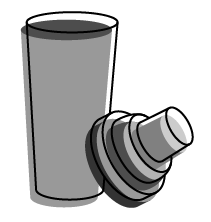

Singapore Sling

The word "sling" in North America traditionally refers to a drink made with alcohol, flavoring (such as fruit juice), and water. Because of this, there's no main recipe for a Singapore Sling. The recipe listed here is just one take on it, but feel free to explore further combinations of flavors!
Originally created in a Singapore hotel by bartender named Ngiam Tong Boon and was called the "gin sling".